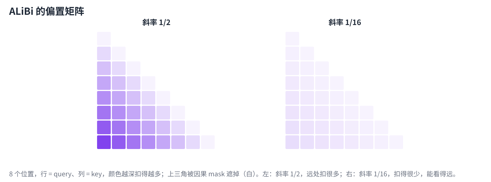
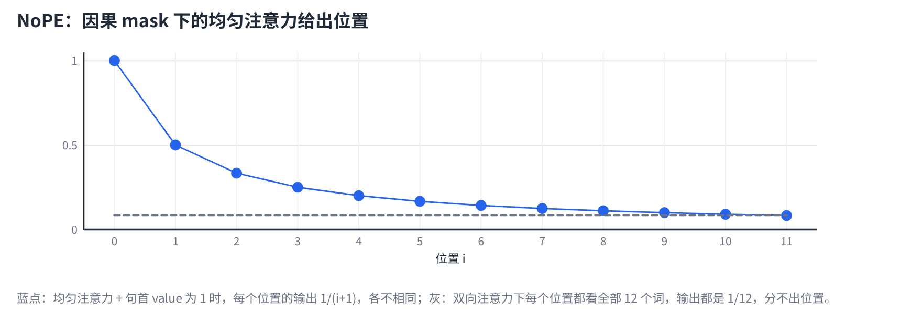
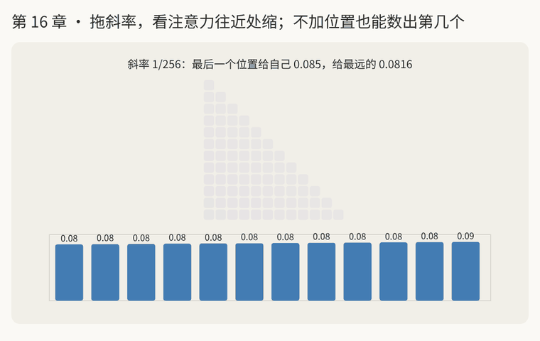

第 16 章 · ALiBi 与 NoPE：不加位置编码行不行
本地运行
git clone https://github.com/wikieden/beyond-transformer
cd beyond-transformer/code/notebooks
pip install jupyterlab torch numpy
jupyter lab ch16_alibi_nope.ipynb也可以下载后直接用 VS Code 打开 .ipynb 运行。需要 GPU 的章节在 Colab 里选「代码执行程序 → 更改运行时类型 → GPU」。
本章回答：RoPE 要转 q、k，还有没有更简单的办法让模型知道“谁离谁近”？ALiBi 直接在注意力分数上按距离扣分，每个头扣得不一样，为什么这样就能读比训练时更长的文本？NoPE 干脆什么都不加，只靠因果 mask，模型怎么还能知道“我是第几个词”？
讲解日期：2026-11-26 · 上一章：第 15 章 RoPE · 下一章：第 17 章 长文本外推
对应原文：ALiBitransformer-deep-dive/materials/text/papers/alibi-2108.12409.txt摘要 L24–L36（在 1024 上训练、外推到更长）、§3 L329–L333（softmax(q_iKᵀ + m·[−(i−1), …, −1, 0])，8 个头的斜率 1/2¹ … 1/2⁸，16 个头时插值）；NoPEnope-length-generalization-2305.19466.txt引言 L116 起、Theorem 1 L372–L378（第一层就能恢复绝对位置）；CS336 a1 handout §7.3 no_pos_emb L2090–L2100
本章缩写：ALiBi = Attention with Linear Biases（带线性偏置的注意力）；NoPE = No Positional Encoding（不加位置编码）；APE = Absolute Position Embedding（绝对位置编码）；m = ALiBi 每个头的斜率；H = 头数；extrapolation（外推：测试时的长度超过训练时）。全部缩写见 附录 · 缩写与术语表
讲解
第一步：ALiBi：在分数上按距离扣分（2026-11-26）
类比：听演讲时离讲台越远，声音越小。 ALiBi 不改 q、k，也不在词向量上加东西，只是在算完的注意力分数上，按“隔了几个词”扣分，越远扣得越多。
§3（L329–L330）：第 i 个 query 的分数
自己扣 0，前一个扣 m，前两个扣 2m……m 是每个头固定的斜率，不学。
数字演示（最后一个位置对前 5 个位置（含自己）的原始分数 [1, 0.5, 2, 0.8, 1.2]，距离 4、3、2、1、0）：
| 斜率 m | 偏置 | 注意力权重 |
|---|---|---|
| 0（不扣） | [0, 0, 0, 0, 0] | [0.1571, 0.0953, 0.4271, 0.1286, 0.1919] |
| 0.5 | [−2, −1.5, −1, −0.5, 0] | [0.0453, 0.0453, 0.3346, 0.1662, 0.4087] |
| 1/256 | [−0.016, −0.012, −0.008, −0.004, 0] | [0.1558, 0.0949, 0.4269, 0.1291, 0.1933] |
斜率 0.5 的头几乎只看最近两三个词；斜率 1/256 的头和不扣分差不多，可以看得很远。

图 16-1 · 8 个位置的偏置矩阵（行 = query，列 = key，颜色越深扣得越多，上三角被因果 mask 遮掉）。左：斜率 1/2；右：斜率 1/16。斜率大的头只看近处一句话：ALiBi 在注意力分数上加 −m·距离，越远扣得越多；不改 q、k，也不加在词向量上。
第二步：每个头一个斜率：几何数列（2026-11-26）
斜率不学，按几何数列固定（L331–L333）：8 个头时是 1/2¹、1/2²、…、1/2⁸；一般 H 个头是 2^{−8k/H}（k = 1 … H）。
| 头数 | 斜率 |
|---|---|
| 8 | 1/2、1/4、1/8、1/16、1/32、1/64、1/128、1/256 |
| 16（前 4 个） | 0.7071、0.5、0.3536、0.25（相邻两个之间插一个几何平均） |
不同的头扣分强度差 128 倍：有的头专看最近几个词，有的头几乎能看全文。这相当于给模型准备了一组从近到远的“视野”。
为什么能外推（摘要 L24–L36）：偏置只依赖距离，不依赖绝对位置，也没有“训练时没见过的位置编号”。测试时序列更长，只是出现了更大的距离，而更大的距离只会扣更多分，模型学到的“近的重要、远的不重要”的规律照样成立。论文在长度 1024 上训练，测试时读更长的文本，困惑度不像正弦编码那样暴涨。
一句话：ALiBi 每个头用固定的几何斜率，强弱差上百倍；偏置只依赖距离，所以测试时序列变长也不会出现没见过的东西。
第三步：NoPE：只靠因果 mask，也能知道自己是第几个（2026-11-26）
类比：排队报数。 没人告诉你排第几，但如果每个人都能看到自己前面所有人（因果 mask），数一数“我能看到几个人”就知道自己是第几个。
NoPE 论文的 Theorem 1（L372–L378）：decoder-only 模型即使不加任何位置编码，第一层就能把绝对位置算出来写进隐状态。思路很简单：
- 一个头对前面所有词给同样的分数（均匀注意力）；
- value 只有句首 token 是 1，其余都是 0；
- 因果 mask 下，位置 i 能看到 i + 1 个词，输出就是 1/(i + 1)。
数字演示（8 个位置）：
| 位置 | 0 | 1 | 2 | 3 | 4 | 5 | 6 | 7 |
|---|---|---|---|---|---|---|---|---|
| 输出 1/(i+1) | 1 | 0.5 | 0.3333 | 0.25 | 0.2 | 0.1667 | 0.1429 | 0.125 |
每个位置得到一个不同的数，后面的 MLP 就能把它读成“我是第几个”。双向注意力（BERT）没有这个效果：每个位置都看到全部 n 个词，算出来都一样，所以 encoder 必须加位置编码。
论文的实验：NoPE 在一些需要长度外推的任务上比 APE、RoPE、ALiBi 还好（L116 起）。但在大规模语言模型上，NoPE 的效果和稳定性不如 RoPE，主流模型仍用 RoPE；也有模型（如部分 Llama 4、Command A 的层）把 NoPE 层和 RoPE 层交替使用。

图 16-2 · 均匀注意力 + 句首标记时，每个位置的输出 1/(i+1)（蓝点）。灰色是双向注意力的结果：每个位置都一样，分不出谁是谁场景代码：给 PyTorch 的注意力加 ALiBi 偏置（真实库调用；本书 chapter-code 只用 NumPy，这段没跑过）：
slopes = torch.tensor([2 ** (-8 * (k + 1) / H) for k in range(H)]) # 每个头一个斜率
dist = torch.arange(n)[None, :] - torch.arange(n)[:, None] # j − i（≤ 0 的部分有用）
bias = slopes[:, None, None] * dist[None] # (H, n, n)，越远越负
out = F.scaled_dot_product_attention(q, k, v, attn_mask=bias + causal_mask) # 不用再给 q、k 加位置
a1 要你把模型里的 RoPE 去掉训一次（no_pos_emb），和 RoPE 比曲线；五种位置编码在更长序列上的对比是里程碑 T-M3。
一句话：decoder-only 的因果 mask 本身就带着位置信息：均匀地看前面所有词，输出 1/(i+1) 就能区分位置；双向注意力没有这个性质。
动画演示：拖斜率，看注意力往近处缩

可交互版：animations/16-alibi-nope.html（下拉：ALiBi / NoPE；滑块：斜率或位置）。
怎么看：
- ALiBi：上面是 12 个位置的偏置矩阵，下面是最后一个位置的注意力权重（第一步）；
- 斜率从 1/256 拖到 1：权重从“铺开”收缩到“只看最近两三个”；
- 切到 NoPE：均匀注意力下每个位置的输出 1/(i+1)，拖位置看它怎么变小（第三步）。
练习与作答记录
题 1（第一步）：原始分数 [0, 0, 0]（三个位置分数一样），斜率 m = ln 2 ≈ 0.693。最后一个位置的权重是多少？
题 2（第二步）：4 个头时，按 2^{−8k/H} 斜率各是多少？
题 3（第三步）：如果 NoPE 模型的句首没有特殊 token，value 都是随机的，第一层的均匀注意力还能区分位置吗？为什么？
口诀
离讲台越远听得越轻：分数减斜率乘距离，不改 q k，也不加在词上。
斜率不学，几何数列，从二分之一到二百五十六分之一；只看距离，长了也不怕。
不加位置靠 mask：均匀看前面，句首当一，输出一除以 i 加一，就知道排第几；双向就做不到。
本章复习卡片
必背：B45（ALiBi 的偏置和斜率、为什么能外推；NoPE 为什么能从因果 mask 得到位置）。练习做完后，按答错、卡住的地方再补。
附录 · 延伸阅读
留给以后深入学习用，不影响本章主线。★ 是建议先读的。
推荐阅读
| 读什么 | 读哪里 | 读它为了什么 |
|---|---|---|
| ★ Train Short, Test Long（ALiBi，Press 等 2022） | 摘要 L24–L36；§3 L329–L333 | ALiBi 的定义和外推实验 |
| ★ The Impact of Positional Encoding on Length Generalization（Kazemnejad 等 2023） | 引言 L116 起；Theorem 1 L372–L378 | NoPE 能表示绝对和相对位置 |
| CS336 a1 handout | §7.3 no_pos_emb L2090–L2100 | 作业里的 NoPE 消融 |
| 《数学与实验统计》第 38 章 位置编码 | ALiBi 一节 | 几种位置编码的对照 |
数学原理
- ALiBi 的平移不变：偏置只依赖 i − j，对所有 i 同时加常数不变；softmax 对同一行加常数不变，所以“自己扣 0”只是约定。
- 几何斜率：m_k = 2^{−8k/H}，相邻头的斜率之比固定为 2^{−8/H}。
- 因果均匀注意力：输出 = 前 i + 1 个 value 的平均；value 只在位置 0 非零时，输出 = v₀/(i + 1)，单调递减、互不相同。
公式清单
| 公式 | 意思 |
|---|---|
| \(\text{softmax}(q_iK^\top + m\cdot[-(i-1), \dots, -1, 0])\) | ALiBi |
| \(m_k = 2^{-8k/H}\) | 第 k 个头的斜率 |
| 输出\(_i = \frac{1}{i+1}\sum_{j\le i}v_j\) | 因果均匀注意力 |
代码对照：把本章的数字用代码算一遍
NumPy。代码在仓库本地
beyond-transformer/solutions/chapter-code/ch16_alibi_nope.py，配套测试tests/test_ch16.py，notebook 在notebooks/ch16_alibi_nope.ipynb：
bash cd beyond-transformer/solutions/chapter-code uv run python ch16_alibi_nope.py uv run pytest tests/test_ch16.py
讲义 ↔ 代码：
| 讲义 | 公式 | 写法 | 跑出来 |
|---|---|---|---|
| 第一步 偏置与权重 | −m·距离 | alibi_bias(5, m)、alibi_weights(m) |
m = 0.5 时最后一个位置 0.4087 |
| 第二步 斜率 | 2^{−8k/H} | slopes(8)、slopes(16) |
1/2 … 1/256 |
| 第三步 NoPE | 1/(i+1) | nope_position(8) |
1、0.5、0.3333 … |
关键几行：
b = -m * (i - j).astype(float); b[j > i] = -np.inf # ALiBi 偏置 + 因果 mask
return [2 ** (-8 * (k + 1) / h) for k in range(h)] # 每个头的斜率
v = np.zeros(n); v[0] = 1.0 # NoPE：只有句首的 value 是 1
return [float(np.mean(v[: i + 1])) for i in range(n)] # 均匀看前 i + 1 个
代码里才看得到的 2 件事：
- 偏置和 mask 合在一起：被遮的位置直接放 −∞，softmax 时它们的权重自然是 0；实现时 ALiBi 偏置通常和因果 mask 拼成同一个张量传进注意力。
- NoPE 的“位置”是第一层算出来的：代码里的均匀注意力和句首 value 都是手写的；真实模型要从数据里学出这样的头。
自己改一改（不影响练习答案）：
- 把
SCORES改成递增的 [0, 1, 2, 3, 4]，斜率 0.5 时权重还偏向最近吗？ - 给
nope_position换成双向（每个位置都看全部 n 个），输出变成什么？